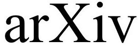
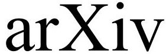

Camille Carvalho
Presentation
I'm a Maîtresse de conférence (Associate Professor) at INSA de Lyon, I'm part of the MMCS team at Institut Camille Jordan.
I'm also an Associate Researcher at the University of California Merced.
From 2018 to 2022 I was an Assistant Professor of Applied Mathematics at UC Merced.
I'm interested in developing new efficient numerical methods for interface problems, especially in electromagnetics and in plasmonics. I work on wave propagation phenomena and related problems, Finite Element-based methods to accurately capture near-fields in plasmonic structures, integral equation methods for close evaluation problems.

 



Contact


camille.carvalho AT insa-lyon dot fr
ccarvalho3 AT ucmerced dot edu